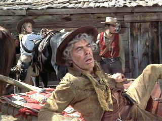
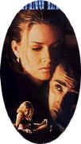
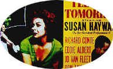
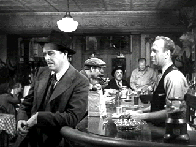
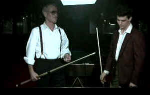
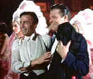

|
Oscar® Formula One
By Stu Kobak
Why not take on the tippler? If you're an actor
with a meaty alcoholic's role, you've got a good shot at getting an award nod from the Academy of
Motion Picture Arts and Sciences. Members of the Academy have a soft spot reserved for peers taking
on the battle of the bottle. Come Oscar® night when those envelopes are opened you might find a
faint aroma of the hard stuff lingering on the card announcing the winners.
 Maybe
the most blatant example of rewarding drink on screen is Lee Marvin's Oscar® for the role of Kid
Shelleen/Tin Strum in the 1965 Cat Ballou. Marvin lets it all hang out as the gunfighter who
can pull out a bottle as fast as a pair of blazing six-guns. I think the stunt work was as
memorable as anything else. Marvin's swinging around the saddle of a horse with the abandon of a
drunk falling down the stairs lingers on memory as well as any slobbered witticism issued from his
lips. Some say the thought of Marvin's spoofing his own hard nosed drinking habit inspired Academy
voters with his choice. The truth is, not many actors have made have succeeded in making themselves
quite as disgustingly soused as Marvin did with Shelleen. When Marvin stepped up to the podium to
get the award, presenter Julie Andrews kept a respectful distance for fear of getting tipsy
on Marvin's breadth. After all, it wouldn't look nice for Mary Poppins to look drunk on
screen.
During the years of Prohibition beginning in 1919, actors drank with abandon on
screen while speakeasies flourished. The Academy of Motion Picture Arts and Sciences was founded in
1927 and the first awards were handed out the following year. It didn't take them long to recognize
the value of alcohol on screen. Repeal of Prohibition was still two years away when The Champ was
released. Wallace Beery, the gravel-voiced tough guy played an ex-heavyweight boxing champ washed
up and far too fond of the sauce to take care of his young son. As The Champ,
Beery was often bleary, but not too tipsy to tug on the heartstrings of his audience. Maybe he
couldn't throw a right hand the way he once could, but the Champ could act up a storm. Throwing
some wicked one-two acting punches, Beery fed off the endearing, often saccharin performance of
young Jackie Cooper playing his son. Beery could play drunk with the best of them and the
combination of alcohol and tears proved a knockout as the two fisted actor shared the 1931 Best
Actor Award with Frederic March.
The latest screen drinking binge to result in liquid Oscar® flowing from the
bottle was Nicolas Cage's ode to the muse of booze as writer Ben Sanderson in Leaving Las Vegas.
There's nothing more appealing than the drunk Hollywood screenwriter. Slobbering his way from Los
Angeles to Las Vegas on the destructive drunk binge to end all binges, Sanderson meets up with a
prostitute with a heart of gold and doesn't find redemption. That's right. Cage wobbles his way
through a suicidal succession of bottles, slurs his words with Brandoesque aplomb, and adds
inspiration from Elisabeth Shue's magnificent performance as the deflowered Sera. Cage's
unrelentingly pitiful characterization probably got lots of sympathy votes from studio people
feeling guilty over causing some writer's downfall over one too many rejections. Did I say guilt?
So Cage got the chance to play fast and loose with the booze and the babe and came away on Oscar®
night with a gold statuette for massive slurring of words.
 Maybe Elisabeth Shue should have gotten just as drunk as Cage for her role as
Sera. How else could you explain her losing out in the Academy voting? Shue was nominated but Susan
Sarandon walked away with the prize playing a Nun in Dead Man Walking.
The truth is women and alcohol don't hold the same sway over Academy
voting members. You're better off playing a nun or a nanny or a nut. There's something about a
slobbering woman, sweaty and stumbling from too much booze, that stops people dead in their tracks
and turns them off. Ladies still get the occasional alcoholic nod for their work with the bottle
before the cameras, but it just is not the same. Jane Fonda wakes up one morning next to a dead man
in The Morning After and got a nomination as best actress for her efforts in that minor
film, but you can be sure Jane kept a certain amount of decorum under the influence of the drink.
Jodie Foster may have been a hard drinking blue collar gal for her role in The Accused, but
Sarah Tobias is no alcoholic.
Some actresses have overcome the slobbering barrier. Earthy Susan Hayward had an
exceptional screen presence. Hayward could toss back her head to laugh or to throw down a shot of
alcohol with equal sexiness. Susan Hayward knew a thing or two about playing alcoholic on screen.
She was nominated three times as best actress while under the influence; once for I'll Cry
Tomorrow, as the chanteuse Lillian Roth and for Smash-Up, the Story of a Woman. In My
Foolish Heart, the only thing standing in the way of Hayward's alcoholic stupor are the
exceeding high percentage of screen tears. But Hayward had to go to the electric chair in I Want
to Live  before the
Academy voters felt she paid enough screen penance to get the Oscar® as Best Actress. Oh yes, she
drank quite a bit as party girl Barbara Graham but her final reprieve was not getting reprieved.
The beautiful Jessica Lange broke through the wall of prejudice against
woman drunks on screen. Lange manages to look beautiful in any circumstances, so when she's under
the influence it's never too unseemly by Hollywood standards. Lange toyed with alcohol and
substance abuse as actress Frances Farmer in Frances and the dynamic performance
garnered her an academy nomination only to lose out to Meryl Streep's heart-rending role in
Sophie's Choice. A dozen years later Lange tipped the bottle on screen again in Blue Sky.
Lange's rage as the pathetic Army wife, liberally plied with alcoholic rage, got the big prize.
Though she does some great drunk scenes in Blue Sky, ultimately the film is not about
alcoholism.
But men rule the alcoholic Hollywood award roost. Legend has it that
for his role as Gypo Nolan, the IRA stool pigeon in John Ford's The Informer, Victor
McLaglen was plastered on the set most of the time. Playing drunk drunk is probably a tougher task
than you might imagine, but director Ford purportedly wanted to alter McLaglen's acting
style, so he plied on the booze during breaks in the action. McLaglen blabbered and slobbered his
way to the podium on Oscar® night with the top 1935 acting honors. Aside from the massive
consumption of alcohol, the fact that three male stars of Mutiny on the Bounty were
nominated for Best Actor just may have split the vote in McLaglen's favor. Clark Gable, Charles
Laughton and Franchot Tone should have had their ration of rum increased.
 Talk about a great Hollywood award cocktail: Ray Milland plays
an alcoholic writer. That's great for a start, but Milland takes it even one step further. Don
Birnam wants to write a book about alcoholism, "The Bottle," but he can't even get past
the title page. Too bad the character couldn't transfer some the ingenuity at secreting bottles to
breaking the dam of words. Milland, after many years of doing the class act on screen got a grand
opportunity to check out the DTs in Billy Wilder's dynamite The Lost Weekend. The romantic
core that lends heart to the portrayal of Birnam's alcoholic stupor provides the film with a
measure of artful pathos. Jane Wyman's suffering, sunny and supportive Helen St. James provides
great contrast tot he edgy Milland performance. Wilder's script is tightly controlled and
splendidly visual without resorting to the equivalent of visual stupor. Add a lurid score from the
great Milos Rozsa and Milland reveals the last hidden bottle as none other than uncle Oscar®.
The first time I remember Jack Lemmon bandying the brew was in Mr.
Roberts. Lemmon's good nature mixed a mean cocktail. Lemmon mixed that brew all the way to the
podium on Oscar® night, coming home with a Best Supporting Actor. Several years later Lemmon found
the right formula again for an Academy Award. No fool, Lemmon hoisted the bottle and turned in one
of his finest performances, in the moving Days of Wine and Roses. Lemmon had some practice
with the role having done the teleplay several years before on live television. No, he wasn't
really drinking on the air. Days provides a double alcoholic whammy as both Lemmon and
costar Lee Remick battle demon rum.
Perhaps Humphrey Bogart's wonderfully wry Charlie Allnut floats on the on
the periphery of successful alcoholic performances The magnificent Bogart remains unshaven and
beautifully greasy on the rough voyage down the Ulonga-Bora River, but his Oscar® chops are built
more on the raging rapids of the river than on any alcoholic embellishment. Allnut may be a
confirmed worshipper of the hooch, Bogart's performance in The African Queen is not really
booze based but scores mammoth points for irascibility. Bogart got his lone Oscar® for Best Actor
playing opposite the great Kate. Katharine Hepburn's straight-laced missionary lady Rosie provided
the perfect foil for Bogart's river rat. A leech or two may have helped seal the Bogart victory on
Awards night in 1951.
 Yeah, into the valley of booze strode cool Paul Newman,
stylishly slurring his words. With bleary blue slits for eyes, he stumbled almost non-stop to the
dramatic court denouement as souse lawyer Frank Galvin. At the end, Newman delivers the closing
arguments without so much as a drop of help hooch to help. Newman did not get got the shiny
statuette for his troubles as the Academy was in a reactionary mood, handing Oscar® gold to Ben
Kingsley for sitting on his dhoti as Gandhi. , But Newman he must have been priming the
Academy members; a little alcohol goes a long way, since four years later in The Color of Money,
Newman reprises his great role of Eddie Felson, the pool hustler, now a liquor salesman, and came
away with Oscar® gold. Newman tuned up on booze several years before tossing bottles and smashing
parking meters in Cool Hand Luke in 1967 and added to his history of screen alcohol with
some hard drinking time in Tennessee William's 1958 Cat on a Hot Tin Roof.
 Mere alcohol is not insurance after all for victory on
Oscar® night. The list of nominees who couldn't drink their way to an Academy Award® is
significant. One of the great alcoholic roles is Norman Maine in A Star is Born. In 1938
Frederic March picked up the bottle, tossed back too many glasses and pretty much debased himself
and abused co-star Janet Gaynor looking for Oscar® gold as the actor who can't resist the booze.
Playing an actor on the way down should have provided sure fire Oscar® bait in 1937, but March ran
up against a brick wall that no amount of alcohol could penetrate. Spencer Tracy's unforgettable
performance as the fisherman Manuel in Captain's Courageous took home Oscar® honors.
Remaking A Star as Born with a musical base for Judy Garland was a brilliant call. Garland
plays long-suffering, loyal Esther Blodgett/Vicki Lester to James Mason's Norman Maine. Mason is
fabulous as the rambunctious drunk, glaring at every glass of whiskey before downing it with pure
self destructive fury. Mason may have slurred with the best of them as Norman Maine, but Marlon
Brando's mumbles in On the Waterfront proved too tough for every Oscar®
contender.
Who'd have thought the diminutive Dudley Moore would ever dig deep enough
into his acting arsenal to garner an Oscar® nomination. It took alcohol to do it, lots of alcohol.
As the stumbling, bumbling rich man floating on the sauce, Moore's Arthur was often
hilarious. Was there a drunk joke not touched upon in that flick? John Gielgud's marvelous support,
ever so straight-laced, helped make Moore's drunken asides that much more fun. This time out is was
cold sober support was rewarded as Gielgud received an Oscar® as Best Supporting Actor of 1981.
Other nominees who may not have downed
enough booze for Academy Oscar® sanction include Lee Remick in Days of Wine and Roses,
Dennis Hopper as the town drunk Hoosiers for his role .Bing Crosby played a singer, not a
big stretch, in The Country Girl, but instead of preaching against the sins of alcohol abuse
as he might have in his Going My Way garb, Der Bingle plays pathetic as the singer gone to
pot who can't deliver the goods anymore. Director John Huston knew a thing or two about tipping
back the bottle and he knew even more about filmmaking. In his 1984 film, Under the Volcano,
Albert Finney added a dash of the sauce to his already saucy dialogue delivery to earn an academy
award nomination as the alcoholic diplomat Geoffrey Firmin. Jack Nicholson and Meryl Streep playing
drunks? It's easy to picture Nicholson abusing the booze, but Streep's a stretch. In 1987's Ironwood,
he and Meryl Streep traded glasses and hopelessly amorous glances. Both of them even got nominated
in the Best Acting category, but the Buffalo setting undoubted went against the grain of the
Academy when doling out the Oscars® as Jack and Meryl had to sit on his past laurels. The
producers should have moved the setting to Hollywood.
Watching the Hollywood life
through the scandal sheets often provides a view filtered through drugs and bottles. The booze
train runs pretty fast in Hollywood, but maybe it's a training ground for the next great alcoholic
role. Actors have piled up a serious treasure of Oscar® gold walking an inebriated road.
Oscar® Booze on DVD
You can catch Lee Marvin slipping and
sliding from his saddle on DVD in Columbia's release of Cat Ballou. The vintage film
looks like fresh made hooch on DVD, with lively colors and consistently sharp images. Delivered as
a special edition, the DVD includes audio commentary from stars Dwayne Hickman and Michael Callan
and Director Elliot Silverstein's memories of making the film in a short accompanying the video
feature.
The Lost Weekend is available
from Universal in a lovely black and white transfer.. Images are consistently sharp and
blacks are rich and deep. The DVD transfer has plenty of punch with outstanding light output. The
range of grays is accurately presented. A few scraps of element damage and dirt are in evidence,
but it's very minor. The wonderful Rozsa score is delivered cleanly in mono sound.
You can catch up with Nicolas Cage in Leaving
Las Vegas in the excellent MGM DVD. Shot in Super 16 by director Mike Figgis, the grainy
and dark nature of the film is potentially video problematic. Grain is handled very well in this
transfer.
Norman Maine is available in glorious color in
Warner's outstanding release of the remake of A Star is Born. Overall, the elements
are smooth and detailed. There are a number of scenes in which grain shows prominently on solid
light colored fabrics. You might catch a hint of grain on faces in several scenes. Some very
slight edge flicker shows up, but it's minor. There is one scene in which there's a momentary frame
glitch when Judy sings "Heaven's Door." Color depth is exquisite, showing off the
lush production to best advantage. A few scenes have color pulsing due to element
deterioration. Blacks are sumptuous with layers of black on black clearly defined. Saturation of
bright solid colors is a virtual explosion of vitality. Shadow detail is excellent. Mixed to
Dolby Digital 5:1, the music and songs are treated with elegant clarity. Dialogue is cleanly
delivered with occasional directionality.
Jack Lemmon looks fine mixing his Mister Roberts
cocktail. The source material for the transfer is quite good. Some scenes are a bit too grainy, but
the overall look is pleasing. The transfer never injects itself between the viewer and the film.
Images are reasonably sharp, colors adequately saturated. The soundtrack has been remastered in
Dolby Digital 5:1. Dialogue is easy to understand and the Franz Waxman score, though not extensive,
sounds fine.
You can watch Jessica Lange chew up the scenery in Blue Sky
on an anamorphic widescreen enhanced for 16 x 9 DVD from MGM.
Paul Newman may keeps his drinking under control for another crack
at pool hall fame in The Color of Money. The Buena Vista DVD is very sharp and the
colors are deeply saturated. Presented letterboxed widescreen with no anamorphic enhancement.
Released on DVD in 1997, Arthur is presented by Warner
in a full screen only version.
|
|
|

Truman Show/A,A-
Powered by the consummate taste and directing perfection of Peter Weir. Jim Carrey gives a
marvelous performance. Not to be missed!
 
DVDPlanet is the DVD
incarnation of legendary laser retailer Ken Crane's. Deep discounts and serious service.
 Home Theater Talk is one of the friendliest places on the
Net to discuss everything home theater. The secret ingredient: knowledgeable folks happy to help
their fellow enthusiasts. Home Theater Talk is one of the friendliest places on the
Net to discuss everything home theater. The secret ingredient: knowledgeable folks happy to help
their fellow enthusiasts.

Cyber Theater is an outstanding source for accurate video information. Check out their 16 x 9
format guide for a thorough understanding of DVD encoded that way.

An on-line Home Theater magazine with excellent hardware reviews,
including thorough and responsible research. Check it out.

Great site for DVD followers. Lots of
information, some speculation, opinion, and reviews all bundled in a sparkling interface.

The official site for information about the great comic director. A treat for connoisseurs of
classic Hollywood madcap.

Selections from the Feature Archive
include articles on Akira Kurosawa, Frank
Darabont, Blonde Bimbos, Hollywood Street Gangs, or Vietnam: The
Hollywood Pariah, and many more....

Is North by Northwest Hollywood's definitive exploration of the nose? From schnozzles to
beezeers, film mavens make the most of the foremost. Click on Mount Hitchcock for more.

The
Movie Poster Archive includes extensive poster images from the films of stars like Susan Hayward,
Kirk Douglas, Katharine Hepburn and many more. Our featured star is James Mason

Home Theater Talk Cartoons

Click through for a humorous look at the world of home theater
through artist Mike Knapp's eyes.
|